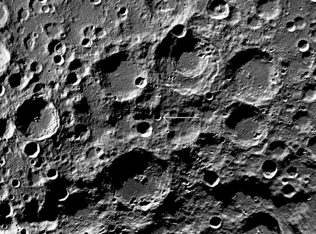
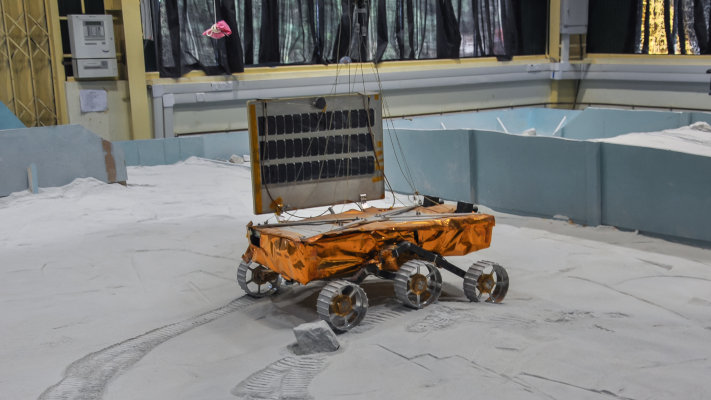

India's moon rover just avoided a treacherous crater
India's moon rover is proving to be a scrappy, resilient space explorer.
While cruising the dark and craggy lunar terrain at the south pole region Sunday, Pragyan came within 10
feet of
a crater plenty big enough to swallow the whole buggy.
It was a close call, but the rover's navigation cameras spotted the crater, about 13 feet wide, just in
time.
Pragyan was then commanded to retrace its path to avoid the hazard, according to the Indian Space
Research
Organization, India's version of NASA.

Crater on the moon
It's now safely heading on a new path," the space agency said Monday
The success of Chandrayaan-3, which means "moon craft" in Hindi, places India among the former Soviet
Union,
United States, and China: global superpowers-turned-spacefarers who have landed on the moon 239,000
miles away.
The victory comes four years after India's Chandrayaan-2 mission crashed attempting the same feat of
landing
near the moon's south pole.
India's accomplishment follows mere days after the Russian space agency, Roscosmos, lost its Luna-25
robotic
spacecraft in a crash. The dueling Indian and Russian missions were each trying to set their crewless
spacecraft
down near the south pole last week.

Chaandrayaan-3 in a test facilty
Latest News
The James Webb Telescope
The James Webb Telescope launched Dec. 25, 2021, on an Ariane
5 rocket from Europe's Spaceport in French Guiana on the northeastern coast of South
America.